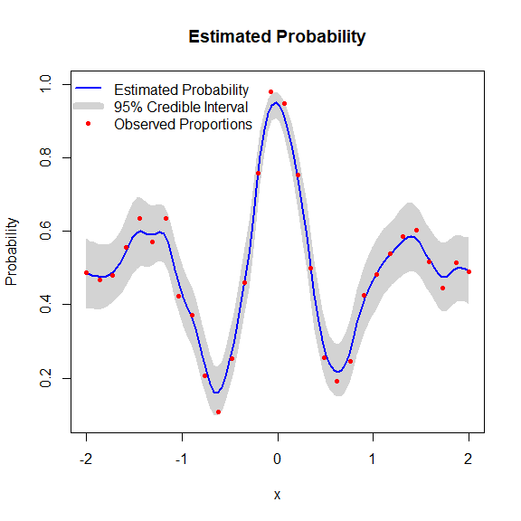
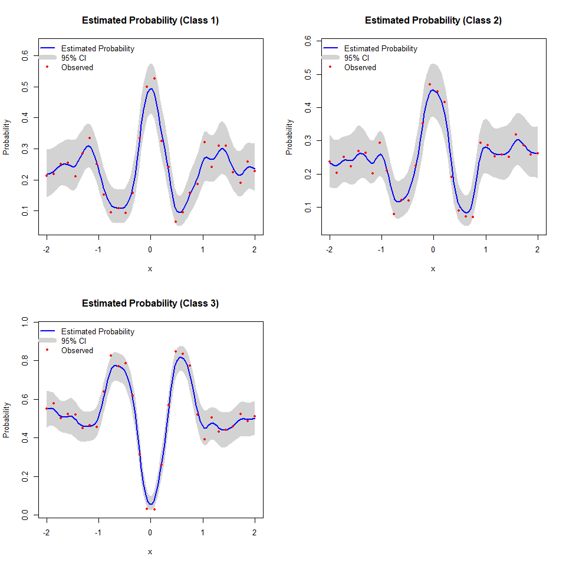

The BKP package provides scalable Bayesian modeling tools for binomial and multinomial response data via the Beta Kernel Process (BKP) and its generalization, the Dirichlet Kernel Process (DKP).
- BKP is designed for binary (or binomial) outcomes.
- DKP extends BKP to handle multi-class responses via Dirichlet-multinomial modeling.
Both models leverage kernel-based weighting and conjugate priors to enable efficient posterior inference, probabilistic prediction, and uncertainty quantification.
Installation
You can install the stable version of BKP from CRAN with:
install.packages("BKP")Or install the development version from GitHub with:
# install.packages("pak")
pak::pak("Jiangyan-Zhao/BKP")BKP: Binary/Count Response Modeling
Example
library(BKP)
# Simulate data
set.seed(123)
n <- 30
Xbounds <- matrix(c(-2, 2), nrow = 1)
x <- matrix(seq(-2, 2, length.out = n), ncol = 1)
true_pi <- (1 + exp(-x^2) * cos(10 * (1 - exp(-x)) / (1 + exp(-x)))) / 2
m <- sample(50:100, n, replace = TRUE)
y <- rbinom(n, size = m, prob = true_pi)
# Fit BKP model
model <- fit.BKP(x, y, m, Xbounds = Xbounds)
# Predict on new data
Xnew <- matrix(seq(-2, 2, length.out = 100), ncol = 1)
pred <- predict(model, Xnew)
# Plot results
plot(model)
DKP: Multi-class Extension
DKP generalizes BKP to multi-class settings using a Dirichlet-multinomial model.
Example
# Simulate 3-class data
set.seed(123)
n <- 30
Xbounds <- matrix(c(-2, 2), nrow = 1)
x <- matrix(seq(-2, 2, length.out = n), ncol = 1)
pi1 <- (1 + exp(-x^2) * cos(10 * (1 - exp(-x)) / (1 + exp(-x)))) / 2
pi_true <- cbind(pi1/2, pi1/2, 1 - pi1)
m <- sample(50:100, n, replace = TRUE)
Y <- t(sapply(1:n, function(i) rmultinom(1, size = m[i], prob = pi_true[i, ])))
# Fit DKP model
model_dkp <- fit.DKP(x, Y, Xbounds = Xbounds)
# Predict on new input
Xnew <- matrix(seq(-2, 2, length.out = 10), ncol = 1)
pred_dkp <- predict(model_dkp, Xnew)
# Plot results
plot(model_dkp)
Features
- ✅ Bayesian modeling for binomial and multinomial count data
- ✅ Kernel-based local information sharing
- ✅ Posterior prediction and uncertainty quantification
- ✅ Class label prediction using threshold or MAP rule
- ✅ Simulation from posterior (Beta or Dirichlet) distributions